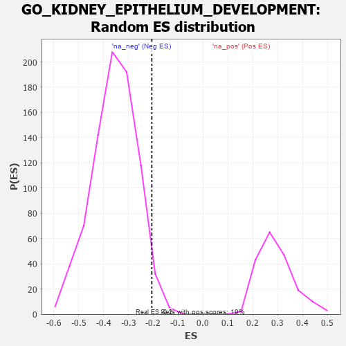

| | | Dataset | 7d |
| Phenotype | NoPhenotypeAvailable |
| Upregulated in class | na_neg |
| GeneSet | GO_KIDNEY_EPITHELIUM_DEVELOPMENT |
| Enrichment Score (ES) | -0.20601736 |
| Normalized Enrichment Score (NES) | -0.57876307 |
| Nominal p-value | 0.96670777 |
| FDR q-value | 1.0 |
| FWER p-Value | 1.0 |
Table: GSEA Results Summary
 Fig 1: Enrichment plot: GO_KIDNEY_EPITHELIUM_DEVELOPMENT
Fig 1: Enrichment plot: GO_KIDNEY_EPITHELIUM_DEVELOPMENT
Profile of the Running ES Score & Positions of GeneSet Members on the Rank Ordered List
| PROBE | GENE SYMBOL | GENE_TITLE | RANK IN GENE LIST | RANK METRIC SCORE | RUNNING ES | CORE ENRICHMENT | | 1 | SIX2 | | | 40 | 3.152 | 0.1489 | Yes |
| 2 | SMAD5 | | | 231 | 0.979 | 0.1727 | Yes |
| 3 | DLL1 | | | 337 | 0.760 | 0.1966 | Yes |
| 4 | HES5 | | | 661 | 0.571 | 0.1838 | No |
| 5 | YAP1 | | | 1041 | 0.475 | 0.1592 | No |
| 6 | MEF2C | | | 1054 | 0.473 | 0.1808 | No |
| 7 | MTSS1 | | | 1149 | 0.454 | 0.1911 | No |
| 8 | SMAD4 | | | 1860 | 0.326 | 0.1175 | No |
| 9 | SIM1 | | | 1898 | 0.321 | 0.1285 | No |
| 10 | FOXD1 | | | 2093 | 0.292 | 0.1183 | No |
| 11 | BMP7 | | | 2107 | 0.290 | 0.1308 | No |
| 12 | SLIT2 | | | 2724 | 0.195 | 0.0626 | No |
| 13 | FGFR2 | | | 2895 | 0.167 | 0.0494 | No |
| 14 | WNT4 | | | 3023 | 0.146 | 0.0405 | No |
| 15 | SMAD3 | | | 3303 | 0.105 | 0.0104 | No |
| 16 | SMAD1 | | | 3337 | 0.099 | 0.0111 | No |
| 17 | FMN1 | | | 3363 | 0.095 | 0.0126 | No |
| 18 | SMAD7 | | | 3369 | 0.093 | 0.0165 | No |
| 19 | EYA1 | | | 3987 | -0.006 | -0.0610 | No |
| 20 | ROBO2 | | | 4066 | -0.018 | -0.0699 | No |
| 21 | WNT11 | | | 4282 | -0.056 | -0.0943 | No |
| 22 | ILK | | | 4510 | -0.096 | -0.1182 | No |
| 23 | GATA3 | | | 4614 | -0.120 | -0.1253 | No |
| 24 | DLG1 | | | 4860 | -0.169 | -0.1480 | No |
| 25 | PROM1 | | | 4996 | -0.197 | -0.1553 | No |
| 26 | SMO | | | 5195 | -0.247 | -0.1683 | No |
| 27 | EPHA4 | | | 5273 | -0.265 | -0.1650 | No |
| 28 | MAGI2 | | | 5295 | -0.269 | -0.1545 | No |
| 29 | TCF21 | | | 5340 | -0.283 | -0.1463 | No |
| 30 | SOX8 | | | 5404 | -0.296 | -0.1398 | No |
| 31 | FGFR1 | | | 5543 | -0.332 | -0.1410 | No |
| 32 | JAG1 | | | 6060 | -0.494 | -0.1819 | No |
| 33 | MYO1E | | | 6200 | -0.537 | -0.1732 | No |
| 34 | SMAD2 | | | 6216 | -0.541 | -0.1487 | No |
| 35 | WWTR1 | | | 6631 | -0.729 | -0.1653 | No |
| 36 | AHI1 | | | 6860 | -0.848 | -0.1527 | No |
| 37 | FAT4 | | | 6948 | -0.901 | -0.1196 | No |
| 38 | LHX1 | | | 7431 | -1.305 | -0.1167 | No |
| 39 | PKD1 | | | 7628 | -1.611 | -0.0627 | No |
| 40 | PKD2 | | | 7822 | -2.167 | 0.0188 | No |
Table: GSEA details [plain text format]

Fig 2: GO_KIDNEY_EPITHELIUM_DEVELOPMENT: Random ES distribution
Gene set null distribution of ES for GO_KIDNEY_EPITHELIUM_DEVELOPMENT